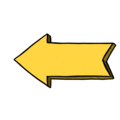
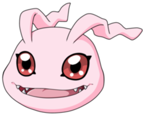
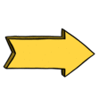

Koromon é um Digimon Menor. É um diminuto Digimon que desprendeu a penugem que cobre a sua superfície e cujo corpo cresceu ainda mais. Embora tenha se tornado capaz de se mover mais ativamente, ainda é incapaz de lutar. Ele pode produzir bolhas de sua boca para intimidar os oponentes.


